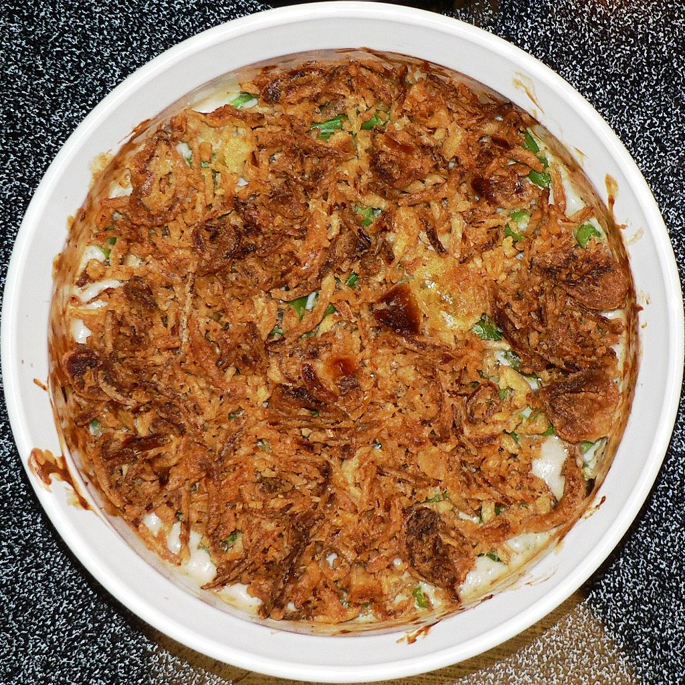

Green Bean Casserole

Overview
- Serves: 6 people
- Prep Time: 10 mins
- Cook Time: 15 mins
We agree that casseroles look unappetizing, but it is a small price to pay for the pleasure of eating this excellent dish.
Ingredients
- Green beans: 14.5 ounces of drained green beans
- Mushroom soup: 10.5 ounces of cream mushroom soup
- Cheddar: 1 cup of shredded cheddar cheese
- Onions: 6 ounces of French-fried onions
Steps
- Preheat the oven to 350 degrees F (175 degrees C).
- Mix green beans and condensed soup together in a large microwave-safe bowl until well combined. Microwave on high until
warm, 3 to 5 minutes.
- Stir 1/2 cup Cheddar cheese into the green bean mixture. Microwave on high for 2 to 3 minutes.
- Transfer mixture to a casserole dish and spread evenly over the bottom. Sprinkle French-fried onions over top, then
sprinkle with remaining Cheddar.
- Bake in the preheated oven until cheese is melted and the onions are just turning brown, about 10 minutes.
This recipe comes directly from allrecipes.com.